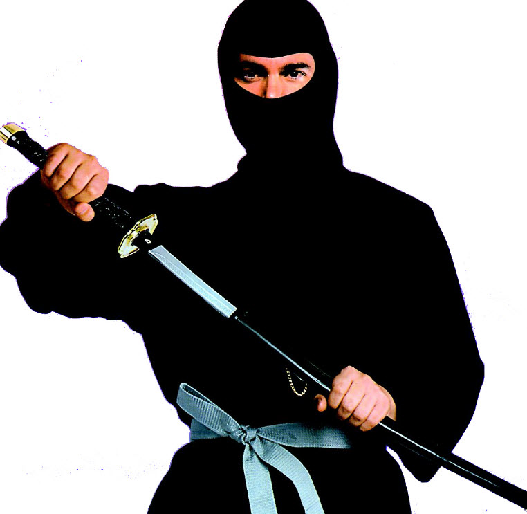

Artes marciais
Artes marciais são disciplinas físicas e mentais codificadas em diferentes graus, que tem como objetivo um alto desenvolvimento de seus praticantes para que possam se defender ou submeter o adversário mediante diversas técnicas. São sistemas para treinamento de combate, geralmente sem o uso de armas de fogo ou de outros dispositivos modernos. Atualmente, as artes marciais, para além de praticadas enquanto treinamento militar, policial e de defesa pessoal, são também praticadas como Desporto de combate. Existem diversos estilos, sistemas e escolas de artes marciais. O que diferencia as artes marciais da mera violência física (briga de rua) é a organização de suas técnicas num sistema coerente de combate, desenvolvimento físico, mental e espiritual.
Veja algumas artes marcias!
Caraté ou karaté (português europeu) ou caratê (português brasileiro) (em japonês: 空手; transl.: karate, AFI: [kɑʀɑtə]) ou caratê-dô (空手道, transl. karate-dō AFI: [kɑʀɑtədɵ]) é uma arte marcial japonesa desenvolvida a partir da arte marcial indígena de Oquinaua sob influência da arte da guerra chinesa (chuan fa), das lutas tradicionais japonesas (koryu) e das disciplinas guerreiras japonesas (budō).

A capoeira ou capoeiragem é uma expressão cultural brasileira que mistura arte marcial, esporte, cultura popular e música. Desenvolvida no Brasil por descendentes de escravos africanos, é caracterizada por golpes e movimentos ágeis e complexos, utilizando primariamente chutes e rasteiras, além de cabeçadas, joelhadas, cotoveladas, acrobacias em solo ou aéreas.

O Ninjutsu (忍術), também conhecido pelo termo Ninpō (忍法), é uma arte marcial japonesa que surgiu a partir da necessidade do emprego de espiões (Ninja) durante o período medieval japonês (século VI). Consistia num conjunto de técnicas que capacitavam os agentes a agir em todas as situações num campo de batalha.
